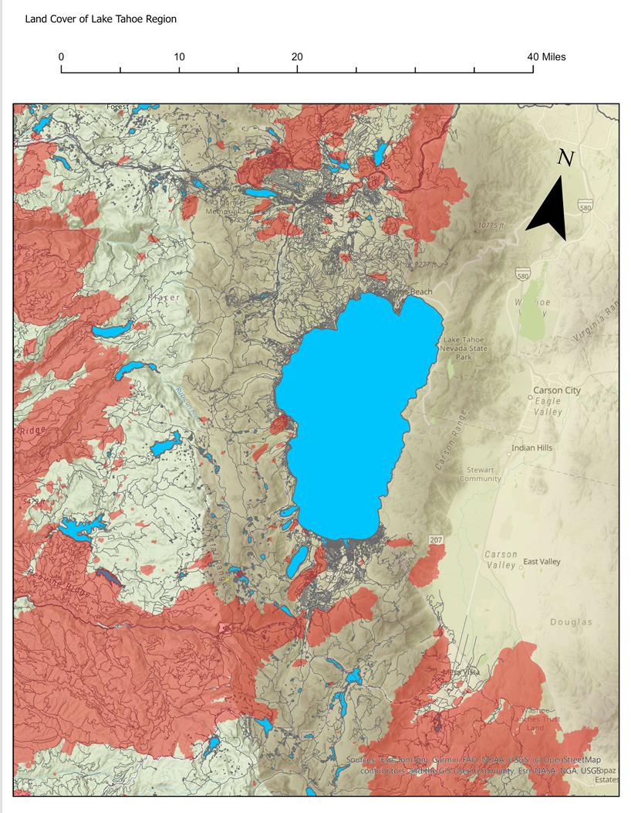
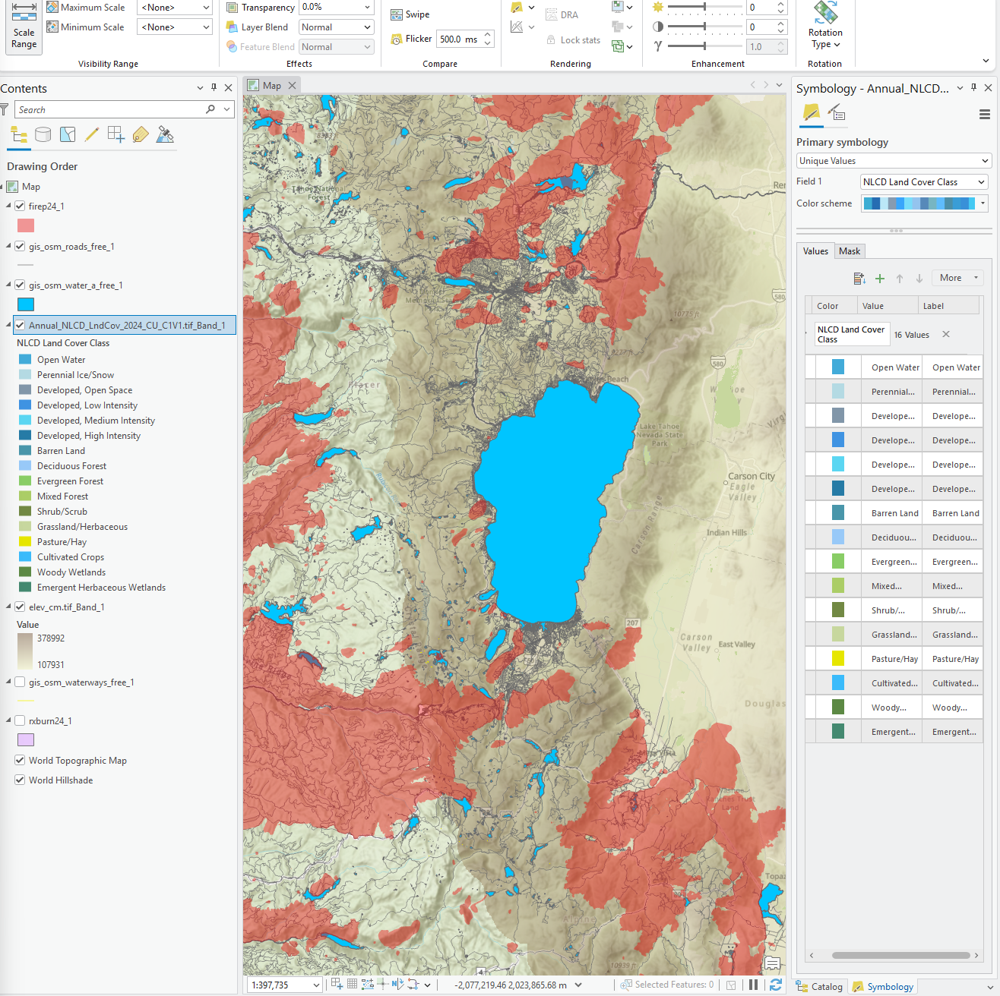

ArcGIS Pro · Raster & vector GIS
Lake Tahoe Wildfire & Land Cover Analysis
Bringing wildfire perimeters, land cover, elevation, roads, and water features together in a finished ArcGIS Pro layout.
Project purpose
Create a landscape-scale view of the Lake Tahoe region to support visual exploration of wildfire, land cover, terrain, and infrastructure.
Original project outputs
Final map & workflow




Methodology
- Prepared and organized raster and vector datasets in ArcGIS Pro.
- Combined wildfire perimeters, NLCD land cover, elevation, road, and water layers.
- Adjusted layer order and symbology to communicate the landscape context.
- Composed an exported map layout with a title, scale bar, north arrow, and source attribution.
Data & documentation
Wildfire perimeters and infrastructure provide vector context; land cover and elevation provide raster context. The existing portfolio identifies NLCD land cover. Dataset editions, acquisition dates, and processing parameters are not recorded in the repository.
Interpretation & limitations
The map supports visual comparison of landscape features. It does not establish wildfire causes or quantify land-cover change. The exported layout does not include a thematic legend, so the colored overlays should be interpreted alongside the workflow rather than as a stand-alone classification key.